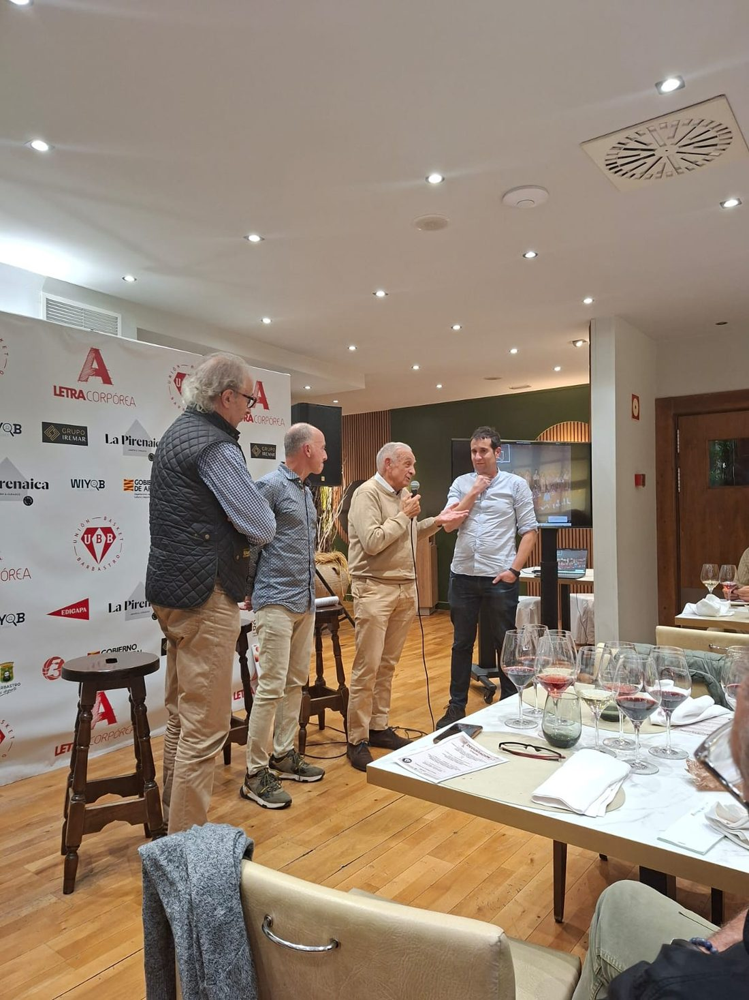
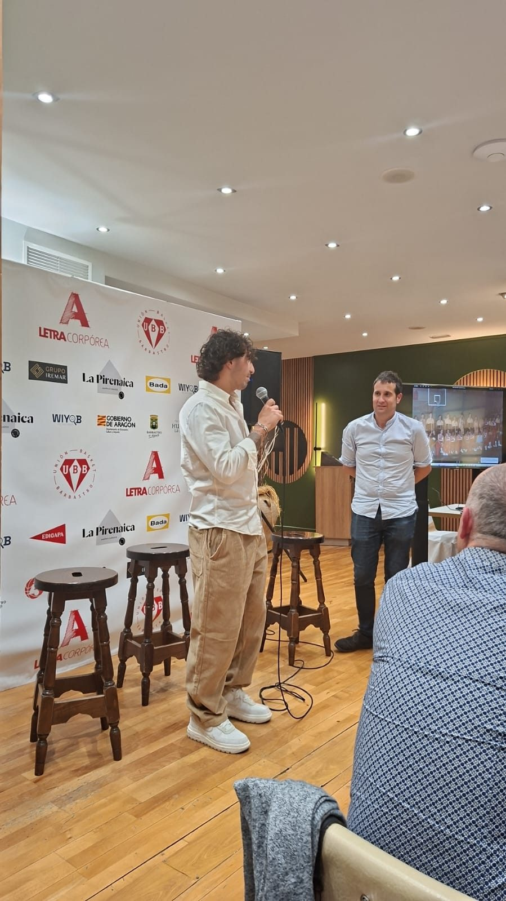
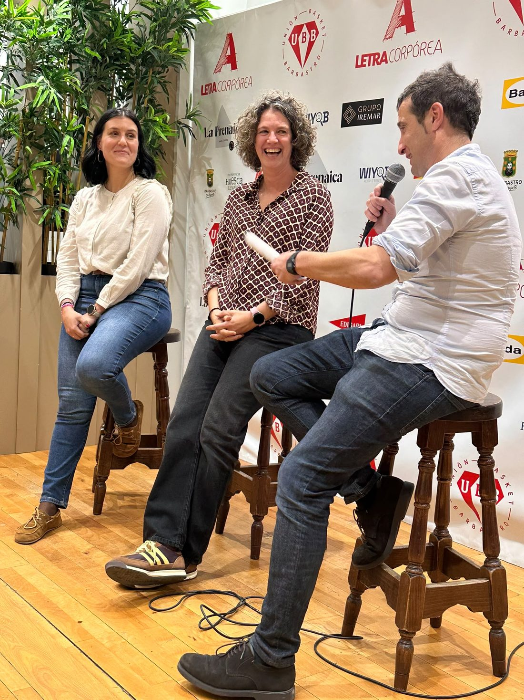

Hay jornadas que van mucho más allá de compartir una mesa, disfrutar de una buena comida y degustar excelentes vinos. Son encuentros que nos permiten recordar de dónde venimos, celebrar lo que somos y mirar con ilusión hacia lo que está por venir.
La cata-maridaje de baloncesto de Barbastro fue una ocasión especial para unir gastronomía, vino, amistad y pasión por un deporte que forma parte de la historia y de la vida de nuestra ciudad.
Entre aromas, sabores, copas y conversaciones, se fueron entrelazando recuerdos de quienes abrieron camino, vivencias de quienes mantienen viva la llama del baloncesto en el presente y sueños de quienes tomarán el relevo en el futuro.
Porque el baloncesto de Barbastro no se explica únicamente con partidos, canastas o resultados. Se construye con personas, generaciones, esfuerzo, compañerismo y una pasión compartida que ha sabido perdurar a lo largo del tiempo.
Fue una jornada para recordar a quienes estuvieron, reconocer a quienes están y brindar por quienes vendrán. Un encuentro en el que cada plato, cada vino y cada conversación sirvieron para maridar mucho más que sabores: maridamos historia, amistad, presente y futuro.
Y es que el baloncesto de Barbastro no es solo un deporte. Es memoria, es identidad y es una familia que sigue creciendo alrededor de un mismo balón.
Porque hay pasiones que no se olvidan, equipos que nunca dejan de ser parte de nosotros y una historia que merece seguir escribiéndose.
¡Por el baloncesto de Barbastro, por quienes lo hicieron posible, por quienes lo mantienen vivo y por todos los que aún están por llegar! 🏀🍷


